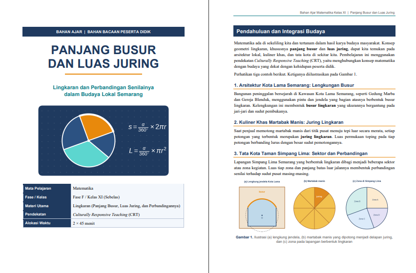
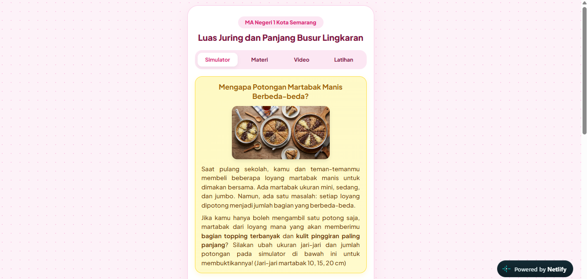
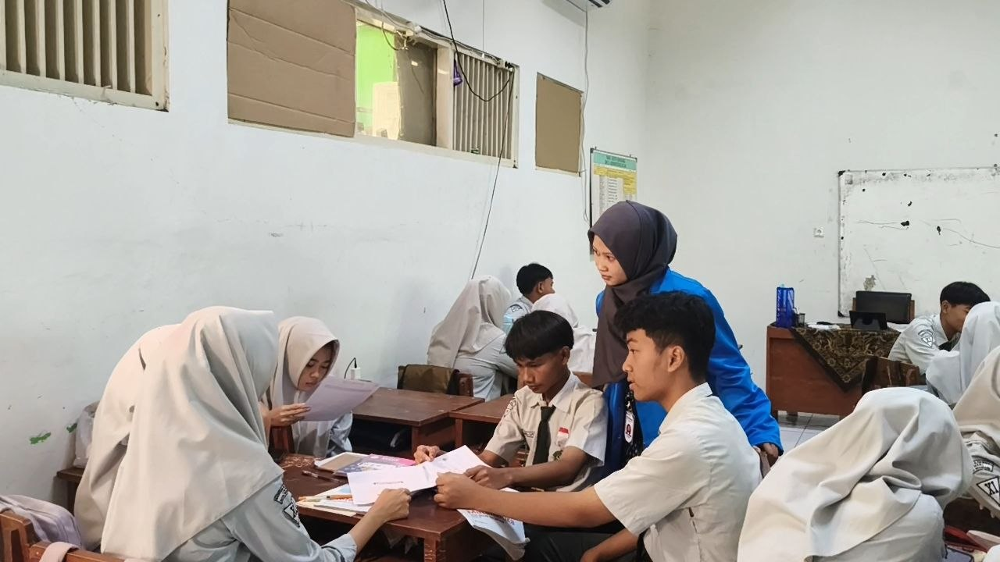
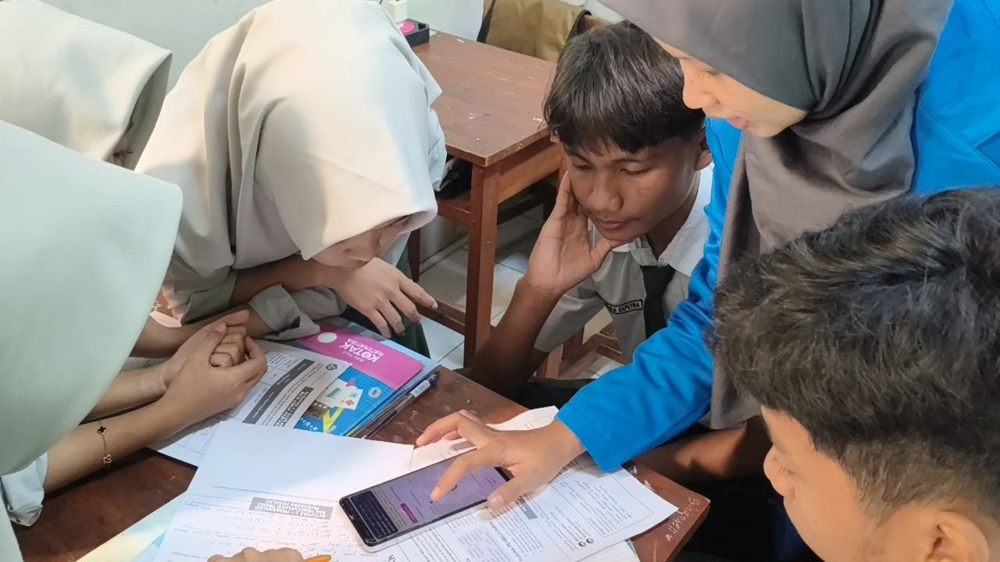
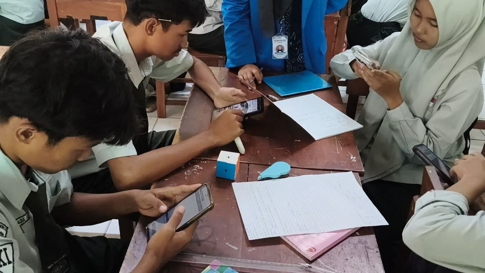
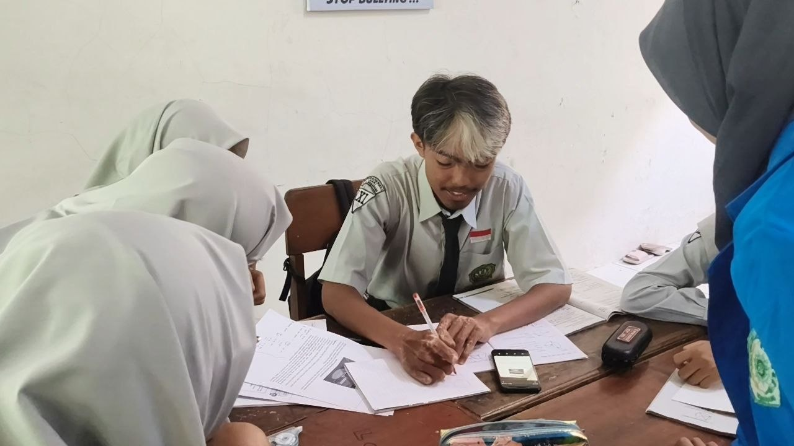

Siklus 2
Siklus 2 berfokus pada materi Panjang Busur, Luas Juring, serta Perbandingan Sudut Pusat, Luas Juring, dan Panjang Busur Lingkaran untuk kelas XI (Fase F). Mengintegrasikan model Problem Based Learning (PBL), pendekatan Culturally Responsive Teaching (CRT) berbasis konteks kuliner tradisional (martabak manis), serta Teaching at the Right Level (TaRL), modul ini mengarahkan murid untuk menemukan, menguji, dan membuktikan konsep perbandingan senilai pada lingkaran secara eksploratif.

Perencanaan Pembelajaran
Buka DokumenLihat Analisis ▾
Rancangan Terstruktur & Berkelanjutan: Modul dirancang dalam 5 JP yang terbagi ke dalam 3 pertemuan. Sintaks PBL disusun secara berkesinambungan (Pertemuan 1: PBL Fase 1–5; Pertemuan 2: PBL Fase 1–3; Pertemuan 3: Lanjutan PBL Fase 3–5 dan Evaluasi). Pengintegrasian Pedagogi Modern:CRT: Mengangkat dilema pemotongan martabak manis untuk membangun motivasi dan kedekatan emosional murid terhadap konsep matematika. TaRL: Hasil asesmen diagnostik kognitif dan non-kognitif awal digunakan untuk membentuk kelompok homogen yang konsisten selama 3 pertemuan agar proses bimbingan berjenjang (scaffolding) berjalan optimal.

Bahan Ajar Guru
Buka Bahan AjarLihat Analisis ▾
Konteks Realistis: Bahan ajar diangkat dari dilema nyata pemotongan martabak manis (pilihan antara Martabak Mini 6 potong vs Martabak Jumbo 12 potong). Stimulus Penalaran: Narasi perbedaan pendapat antara dua tokoh (Kafka dan Aisha) memicu murid untuk membuat dugaan awal, melakukan pembuktian matematis, dan mengevaluasi keputusan terbaik berdasarkan luas porsi serta keliling kulit martabak per potong. Keterkaitan Lintas Disiplin: Menghubungkan konsep geometri dengan disiplin ilmu Prakarya/Kewirausahaan dan Ekonomi (efisiensi, pembagian proporsional yang adil, dan analisis usaha).

Media Pembelajaran
Lihat MediaLihat Analisis ▾
Fungsi Eksploratif: Media website simulator interaktif (luasjuringdanpanjangbusurbysl.netlify.app) dirancang bukan sebagai alat pencari jawaban instan, melainkan sebagai sarana verifikasi hipotesis (hypothesis testing). Fitur & Aksesibilitas: Simulator menyediakan Mode Juring dan Mode Busur dengan kontrol variabel jari-jari ($r$) dan jumlah potongan ($n$) yang mudah digunakan oleh murid di berbagai perangkat (laptop/gawai). Dampak Kognitif: Membantu murid memvisualisasikan hubungan proporsional antara sudut pusat dengan bagian lingkaran secara dinamis, sehingga meminimalkan miskonsepsi abstrak.
Video Pembelajaran
Lihat Analisis ▾
Dinamika Kelompok Homogen (TaRL): Video menunjukkan efektivitas pengelompokan homogen sejak awal hingga akhir siklus. Setiap kelompok bekerja pada tingkat kesiapan belajarnya masing-masing, sementara guru berkeliling memberikan scaffolding sesuai kebutuhan spesifik tiap kelompok. Penyelidikan Bermakna: Terlihat interaksi aktif saat murid menguji dugaan awal mengenai porsi martabak menggunakan simulator. Murid berdiskusi melengkapi tabel rasio sudut pusat, panjang busur, dan luas juring hingga menemukan pola perbandingan senilai. Pameran Karya Non-Verbal: Rekaman memperlihatkan proses gallery walk berbasis LKM, yang menciptakan suasana belajar interaktif dan memberi kesempatan setara bagi semua kelompok untuk menampilkan temuan mereka.
Dokumentasi Siklus 1




Refleksi & Rencana Tindak Lanjut
Dokumen Refleksi
Keberhasilan: Pengintegrasian simulator digital dan masalah kontekstual CRT berhasil meningkatkan partisipasi aktif serta kemampuan penalaran kritis murid dalam membuktikan perbandingan senilai. Kelompok homogen (TaRL) dan strategi gallery walk juga terbukti efektif menciptakan iklim belajar yang kolaboratif dan inklusif. Tantangan: Manajemen waktu pada pertemuan berdurasi 1 JP (Pertemuan 2) terasa cukup ketat saat murid melakukan input data dan penyesuaian ke simulator digital.
Buka Refleksi (Google Drive)
Rencana Tindak Lanjut
Berdasarkan refleksi Siklus 1, langkah perbaikan yang akan diimplementasikan pada Siklus 2 meliputi:
- Menyiapkan lembar petunjuk teknis simulator yang lebih ringkas sebelum kelas dimulai agar alokasi waktu pada jam pelajaran singkat (1 JP) dapat terfokus sepenuhnya pada analisis data LKM.
- Memberikan penekanan eksplisit di papan tulis mengenai perbedaan antara perhitungan luas/busur secara langsung dengan prinsip perbandingan senilai tanpa perlu menghitung nilai total.
- Menambahkan rubrik penilaian antar-teman sederhana saat kegiatan gallery walk untuk melatih keberanian berargumentasi kritis murid